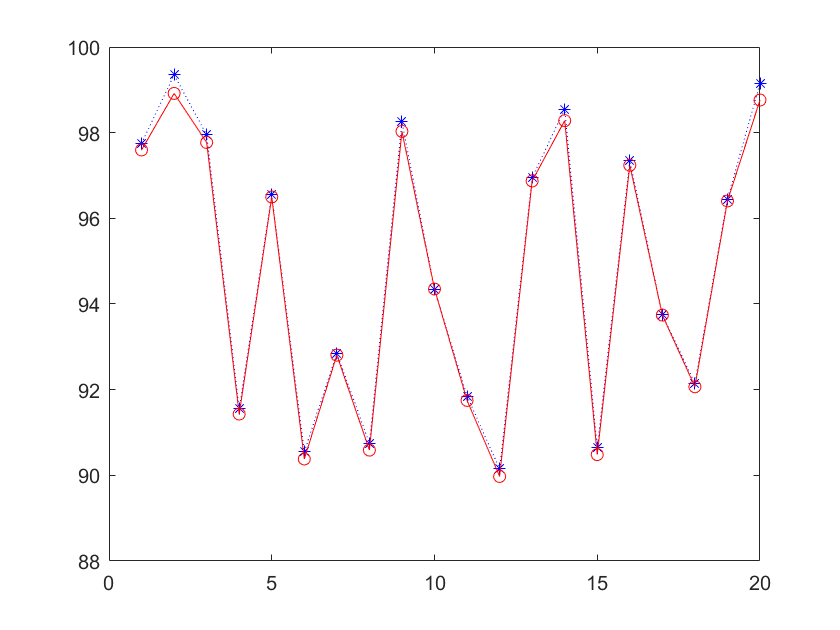

Contents
I.清空环境变量
clear all
clc
II.训练集和测试集的产生
1. 导入数据
load spectra_data.mat
2.随机产生训练集和测试集
temp = randperm(size(NIR, 1)); % 训练集 —— 80%作为样本 M = size(NIR, 1) * 0.8; P_train = NIR(temp(1:M),:)'; I_train = octane(temp(1:M),:)'; % 测试集 —— 20%作为测试 P_test = NIR(temp(M+1:end),:)'; I_test = octane(temp(M+1:end),:)'; N = size(P_test, 2);
III. 数据归一化
[p_train, ps_input] = mapminmax(P_train, 0, 1);
p_test = mapminmax('apply', P_test, ps_input);
[t_train, ps_output] = mapminmax(I_train, 0, 1);
IV. BP神经网络创建、训练及仿真测试
1. 创建网络
net = newff(p_train, t_train, 9);
% view(net)
2. 设置训练参数
net.trainParam.epochs = 1000; net.trainParam.goal = 1e-4; net.trainParam.lr = 0.01;
3. 训练函数
net = train(net, p_train, t_train);
4. 仿真测试
t_sim = sim(net, p_test);
5. 数据反归一化
I_sim = mapminmax('reverse', t_sim, ps_output);
V. 性能评价
error = abs(I_sim - I_test)./I_test; result = [I_test', I_sim', error']
result = 97.7500 97.5967 0.0016 99.3500 98.9159 0.0044 97.9500 97.7719 0.0018 91.5500 91.4303 0.0013 96.5500 96.4988 0.0005 90.5500 90.3814 0.0019 92.8500 92.8067 0.0005 90.7500 90.5883 0.0018 98.2500 98.0296 0.0022 94.3500 94.3501 0.0000 91.8500 91.7489 0.0011 90.1500 89.9744 0.0019 96.9500 96.8726 0.0008 98.5500 98.2808 0.0027 90.6500 90.4846 0.0018 97.3500 97.2390 0.0011 93.7500 93.7404 0.0001 92.1500 92.0675 0.0009 96.4500 96.4044 0.0005 99.1500 98.7621 0.0039
VI. 绘图
figure plot(1:N, I_test, 'b:*', 1:N, I_sim, 'r-o')